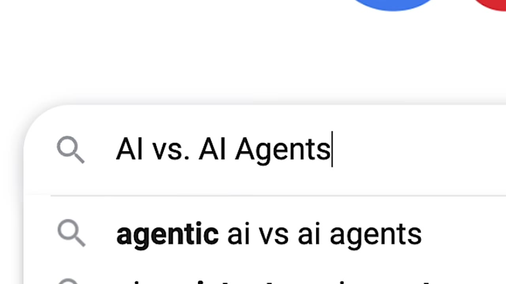
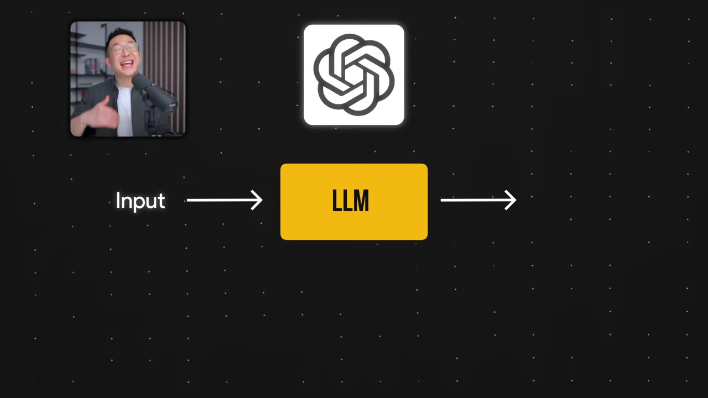
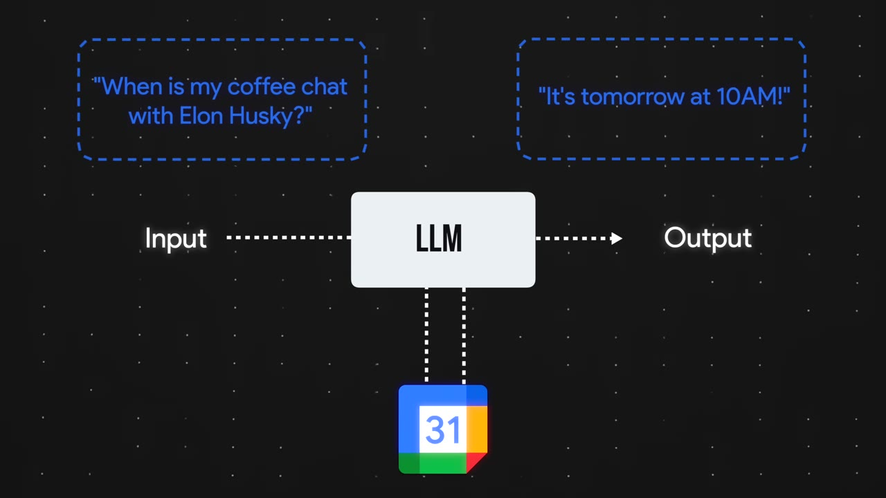
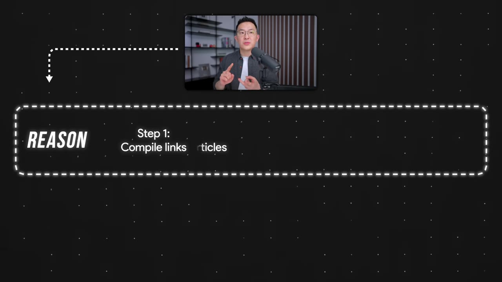
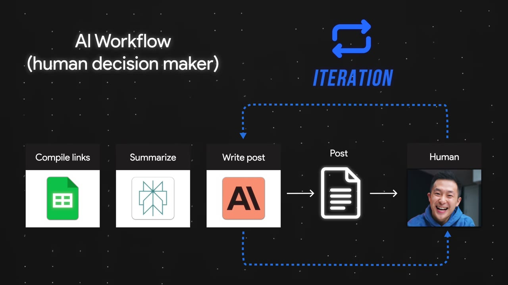
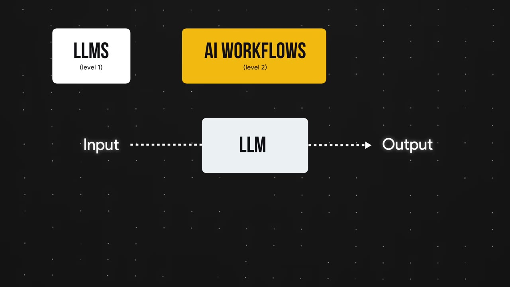

A non-technical walkthrough of the three layers behind AI — from chatbots to workflows to agents — with the one crucial difference that turns a tool into something autonomous.
LLMs are passive text generators — they can't access your calendar, the weather, or any proprietary data on their own.
AI workflows add predefined paths (search calendar → fetch weather → generate text), but a human still designs every step.
An AI agent is a workflow where the human is replaced by the LLM: it reasons about what to do, acts via tools, and iterates on its own.
The REACT framework (Reason → Act → Observe → Iterate) is the common backbone of most AI agents.
The key test: if the AI can autonomously decide and improve its own output, it's an agent — not just a workflow.
01 · Level-by-level
The three layers of AI
Most explanations of AI agents are either too technical or too basic. This video meets you in the middle — building up from chatbots to workflows to agents, using examples you'll actually encounter.

The buzzwords everywhere — "agentic," "AI agents" — are just labels for the same underlying shift.00:00:03
Who this is forZero technical background, but you use AI tools regularly and want to understand what "agentic" actually means.
02 · The base layer
Large Language Models
ChatGPT, Google Gemini, and Claude are applications built on top of large language models (LLMs). They're great at generating and editing text — but they have two fundamental limits.

An LLM takes input, produces output. Nothing more, nothing less.00:01:26
Limited knowledge — LLMs don't have access to your personal data, calendar, or company files.
Passive by nature — they wait for your prompt, then respond. No initiative of their own.
Ask an LLM "When is my next coffee chat?" and it fails — not because it's dumb, but because it simply can't reach your calendar.
03 · Adding paths
AI Workflows
What if we tell the LLM: "Every time I ask about a personal event, search my Google Calendar before answering"? Now it can look things up.

The workflow connects the LLM to external tools (Google Calendar, weather API) via a predefined path.00:02:40
They can only follow predefined paths set by humans.— Speaker
That path is called the control logic. Add more tools — weather API, text-to-speech — and you still have a workflow, not an agent. A human is still the decision maker at every step.
RAG in plain EnglishRetrieval-Augmented Generation (RAG) is just a workflow that helps AI look things up before answering — like accessing your calendar or a weather service.
04 · The leap
AI Agents
Here's the crucial moment: what has to change for a workflow to become an AI agent?

The AI agent reasons about the best approach — not a human writing steps.00:05:46
The one massive change that has to happen … is for me, the human decision maker, to be replaced by an LLM.— Speaker
Reason — "Should I copy-paste articles or just compile links? Links makes more sense."
Act — "Should I use Word? No, Google Sheets is better since the user already connected their account."
Because agents reason and act, the most common configuration is the REACT framework — Reason, Act, Observe the result, Iterate.
05 · Iteration
Agents improve on their own
When a workflow produces output you don't love, you manually tweak the prompt. An agent does that autonomously — adding its own critique step, checking against criteria, and looping until it's satisfied.

The iteration loop: the agent evaluates its own output and revises without human intervention.00:07:20
Real-world exampleAndrew Ng built a demo where an AI vision agent searches for "skier" in video footage — reasoning what a skier looks like, acting by scanning clips, indexing matches, and returning results. No human pre-tagged anything.
06 · The full picture
Three levels, one progression

Level 1 → Level 2 → Level 3: the LLM goes from passive text generator to decision maker.00:09:23
Level 1 — LLM: You provide input → LLM responds with output.
Level 2 — Workflow: You provide input + predefined path (may include external tools). You program the path.
Level 3 — Agent: You give a goal → LLM reasons, acts via tools, observes results, iterates, and produces a final output. The LLM is the decision maker.
The key testIf the AI can autonomously decide how to achieve a goal and improve its own output, it's an agent. If a human designs every step, it's a workflow.